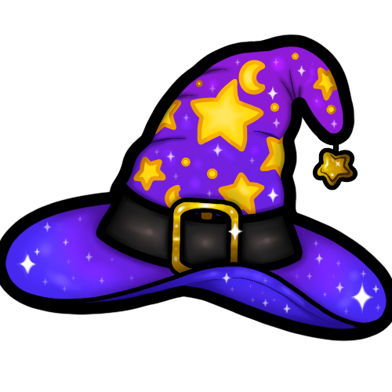
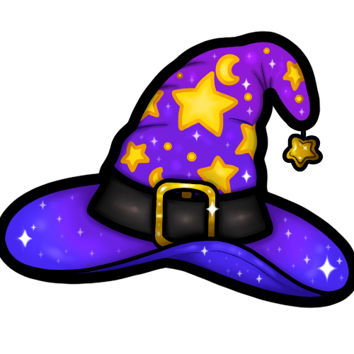

Welcome to my digital collection of artwork.
Here you will find designs inspired by a wide range of things;
from food to art, games to nature.
Twitch emotes are customisable icons that allow you (the Twitch streamer)
and your audience to communicate.
Much like emojis that you would send via text, emotes allow you to show
a range of feelings and thoughts during streams.
Custom Twitch emotes are lovely as they are solely created for your community
and make people feel a lot more connected to one another.
Those who pay to subscribe to you can also use those custom emotes in other people's streams too,
which can also help to bring new people to your
audience as they may want to have those emotes too.
Twitch badges are little icons that go next to a user's name to show what
level of support they are giving you, the streamer.
Typically the badges will start of simple for those who have only
just paid to subscribe to you and will grow to be more epic as the months of support continue.
Whether it's adding more sparkles to show the growth in support that way or
completely different designs for each level, subscriber badges really help to
make those that choose to financially support you feel recognised.